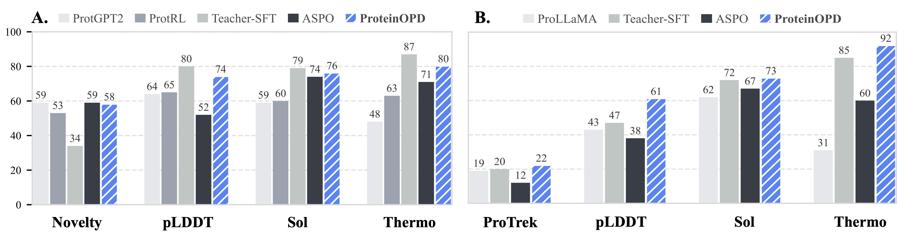
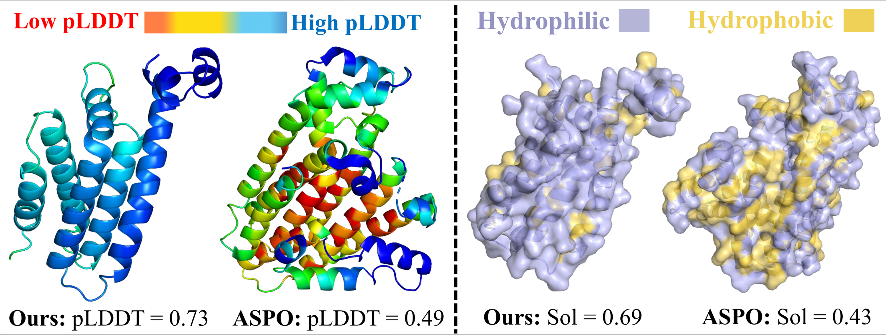

Preference teachers
Sample protein sequences, score them with property-specific oracles, and adapt a pretrained PLM into specialized teachers with small filtered datasets.
Preference alignment for protein design
Towards Effective and Efficient Preference Alignment for Protein Design
A multi-objective on-policy distillation framework that aligns protein language models with competing design preferences while preserving the pretrained model's designability.
Abstract
Designing proteins with desired functions or properties is a central goal in synthetic biology, therapeutic development, and drug discovery. Recent protein language models can generate highly designable sequences, while preference alignment offers a way to steer designs toward desired properties. However, existing alignment methods can cause catastrophic forgetting of pretrained protein knowledge and often struggle to balance multiple competing objectives.
ProteinOPD is a multi-objective preference alignment framework that adapts a pretrained protein language model into preference-specific teachers and distills their knowledge into a shared student through token-level on-policy distillation on the student's own trajectories. In the multi-objective setting, the student is aligned to a normalized geometric consensus of weighted teachers, providing a conflict-aware target for balancing preferences.
Experiments show that ProteinOPD substantially improves target preference objectives without compromising designability, and achieves an 8x training speedup over RL-based alignment competitors.
Method

Sample protein sequences, score them with property-specific oracles, and adapt a pretrained PLM into specialized teachers with small filtered datasets.
Train the student on its own trajectories with dense token-level supervision from a preference-specific teacher.
Combine teachers through a normalized product-of-experts target and align the student to the geometric consensus.
Main Results
| Model | Designability | Preference Alignment Ability | Overall | |||||||
|---|---|---|---|---|---|---|---|---|---|---|
| PPL ↓ | Novelty-U ↑ | Novelty-T ↑ | pLDDT ↑ | %>70 ↑ | pAE ↓ | %<10 ↑ | Sol ↑ | Thermo ↑ | HV ↑ | |
| Random (U) | 1765.28 | 57.13 | - | 24.02 | 0.00 | 24.15 | 0.00 | 0.34 | 0.02 | 0.05 |
| Random (E) | 1747.35 | 59.84 | - | 26.90 | 0.39 | 23.99 | 0.78 | 0.44 | 0.03 | 0.01 |
| ESM2 | 1467.04 | 52.75 | 60.72 | 47.52 | 5.68 | 25.70 | 0.55 | 0.40 | 0.42 | 0.15 |
| ESM3 | 353.71 | 51.21 | 72.66 | 61.30 | 27.49 | 19.68 | 20.52 | 0.31 | 0.56 | 0.21 |
| ProGen2 | 113.04 | 85.76 | 58.70 | 47.44 | 10.55 | 24.70 | 6.25 | 0.54 | 0.29 | 0.44 |
| ProLLaMA | 1445.80 | 55.07 | 42.95 | 40.17 | 0.00 | 19.40 | 0.39 | 0.63 | 0.49 | 0.06 |
| ProtGPT2 | 339.57 | 59.97 | 69.17 | 64.77 | 42.58 | 17.69 | 24.61 | 0.59 | 0.48 | 0.33 |
| Pinal | 542.49 | 46.44 | 45.68 | 64.32 | 52.79 | 15.92 | 40.28 | 0.41 | 0.28 | 0.37 |
| ProteinDT | 1255.16 | 50.69 | 52.25 | 42.75 | 11.37 | 24.77 | 5.82 | 0.39 | 0.36 | 0.29 |
| ProDVa | 79.42 | 2.21 | 37.58 | 58.04 | 9.38 | 18.88 | 7.81 | 0.36 | 0.05 | 0.02 |
| ASPO | 804.45 | 51.57 | 56.77 | 47.99 | 1.95 | 19.63 | 3.12 | 0.69 | 0.68 | 0.17 |
| MoMPNN | 748.73 | 42.50 | 65.47 | 70.19 | 50.66 | 16.78 | 35.05 | 0.57 | 0.65 | 0.46 |
| ProteinOPD | 55.25 | 54.96 | 75.68 | 74.37 | 61.72 | 13.91 | 45.70 | 0.69 | 0.74 | 0.62 |
RQ1

RQ2

RQ3

Case Analysis
